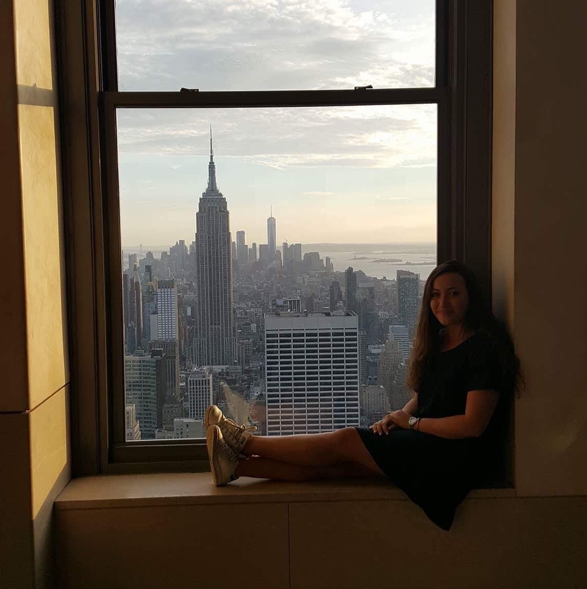
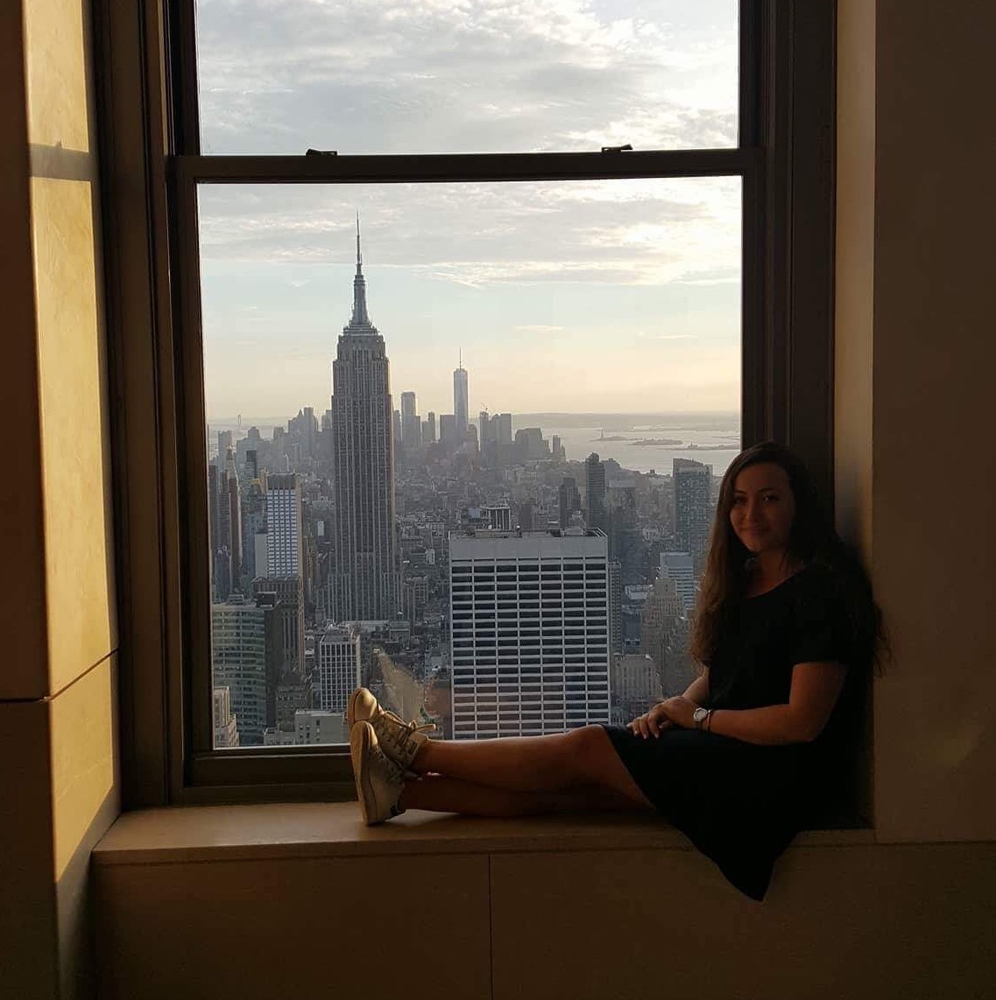
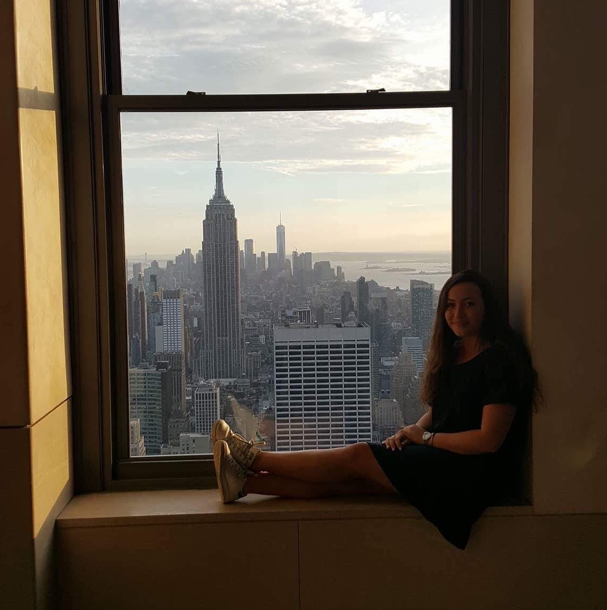
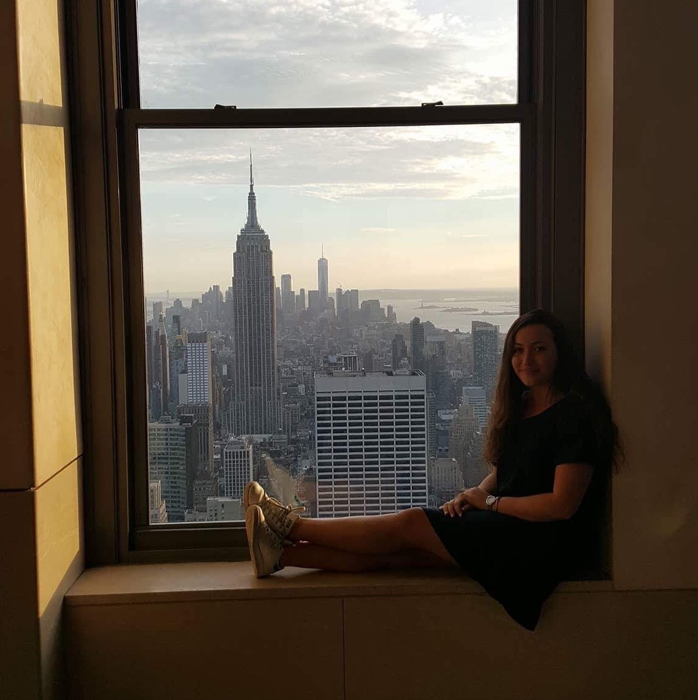

 

I have been passionate about horse riding since I was 4 years old. This physical activity allows me to get some fresh air, contributes to my well-being and improves my mood. Ten years ago, I managed to fulfill my greatest dream and became a horse owner. My passion then became an integral part of my daily life, coming with pros and cons. Horse riding has always been a part of my life, it made me grow and contributed to my personal development. This passion has taught me to be patient, humble, rigorous, and it has allowed me to improve my organizational skills and adaptability quickly. If you would like to know more about this subject, I recently wrote an article (🇫🇷)about the incredible adventure of having a horse.
I have been part of a dance club in Belgium since I was a child, near my home town. I have learned every ballroom dancings with my partner, and participated to competitions. Even though we don't compete anymore because of our different timetables, we still appreciate to go dancing together sometimes ! I particularly love chachacha, salsa, quickstep, waltz, and rock. This passion enabled me to be more rigorous, more patient, more creative, and helped me build up confidence in myself, by not being afraid of what other people would think about me.